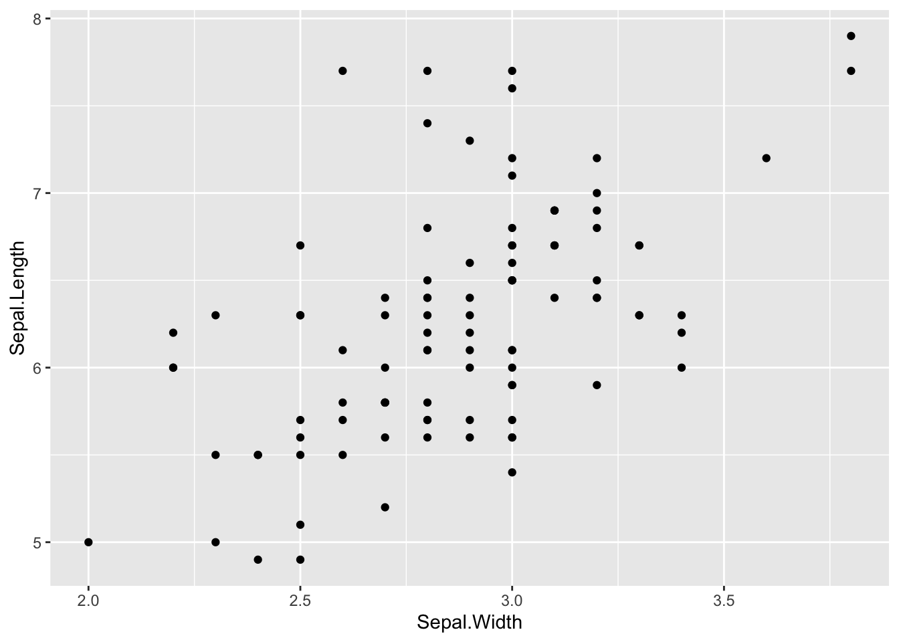

Chapter 20 Modeling
Setup
library(tidyverse)
#> ── Attaching core tidyverse packages ──── tidyverse 2.0.0 ──
#> ✔ dplyr 1.1.2 ✔ readr 2.1.4
#> ✔ forcats 1.0.0 ✔ stringr 1.5.0
#> ✔ ggplot2 3.4.2 ✔ tibble 3.2.1
#> ✔ lubridate 1.9.2 ✔ tidyr 1.3.0
#> ✔ purrr 1.0.1
#> ── Conflicts ────────────────────── tidyverse_conflicts() ──
#> ✖ dplyr::filter() masks stats::filter()
#> ✖ dplyr::lag() masks stats::lag()
#> ℹ Use the conflicted package (<http://conflicted.r-lib.org/>) to force all conflicts to become errors
library(WDI)
library(readxl)
library(broom)- broom: https://cran.r-project.org/web/packages/broom/index.html
- Introduction to broom: https://cran.r-project.org/web/packages/broom/vignettes/broom.html
20.1 What is modeling in EDA
Model is a simple summary of data
Goal: A simple low-dimensional summary of a dataset. Ideally, the model will capture true “signals” (i.e. patterns generated by the phenomenon of interest), and ignore “noise” (i.e. random variation that you’re not interested in).

Let us look at two charts.

df0 %>% ggplot(aes(Petal.Width, Petal.Length)) + geom_point() + geom_smooth(method="lm",formula=y~x, se=FALSE)
df0 %>% ggplot(aes(Sepal.Width, Sepal.Length)) + geom_point() + geom_smooth(method="lm",formula=y~x, se=FALSE)
20.2 Linear Model: Petal.Length ~ Petal.Width
20.3 Formula: \(\text{Petal.Length} = 2.224 + 1.600\cdot \text{Petal.Width}\)

20.4 Linear Model: Sepal.Length ~ Sepal.Width
20.5 Formula: \(\text{Sepal.Length} = 3.093 + 1.103\cdot \text{Sepal.Width}\)
20.6 Petal.Length ~ Petal.Width: R squared = 0.6779 - 68%
df0 %>% lm(Petal.Length ~ Petal.Width, .) %>% summary()
#>
#> Call:
#> lm(formula = Petal.Length ~ Petal.Width, data = .)
#>
#> Residuals:
#> Min 1Q Median 3Q Max
#> -0.9842 -0.3043 -0.1043 0.2407 1.2755
#>
#> Coefficients:
#> Estimate Std. Error t value Pr(>|t|)
#> (Intercept) 2.2240 0.1926 11.55 <2e-16 ***
#> Petal.Width 1.6003 0.1114 14.36 <2e-16 ***
#> ---
#> Signif. codes:
#> 0 '***' 0.001 '**' 0.01 '*' 0.05 '.' 0.1 ' ' 1
#>
#> Residual standard error: 0.4709 on 98 degrees of freedom
#> Multiple R-squared: 0.6779, Adjusted R-squared: 0.6746
#> F-statistic: 206.3 on 1 and 98 DF, p-value: < 2.2e-1620.7 Sepal.Length ~ Sepal.Width: R squared = 0.3068 - 31%
df0 %>% lm(Sepal.Length ~ Sepal.Width, .) %>% summary()
#>
#> Call:
#> lm(formula = Sepal.Length ~ Sepal.Width, data = .)
#>
#> Residuals:
#> Min 1Q Median 3Q Max
#> -1.0032 -0.3877 -0.0774 0.3200 1.7381
#>
#> Coefficients:
#> Estimate Std. Error t value Pr(>|t|)
#> (Intercept) 3.0934 0.4844 6.387 5.70e-09 ***
#> Sepal.Width 1.1033 0.1675 6.585 2.27e-09 ***
#> ---
#> Signif. codes:
#> 0 '***' 0.001 '**' 0.01 '*' 0.05 '.' 0.1 ' ' 1
#>
#> Residual standard error: 0.5547 on 98 degrees of freedom
#> Multiple R-squared: 0.3068, Adjusted R-squared: 0.2997
#> F-statistic: 43.36 on 1 and 98 DF, p-value: 2.27e-0920.8 Linear Model Basics: y ~ x
lm(y~x, data)data %>% lm(y~x, .)y-intercept, and slope: rate of increase or decrease
summary(lm(y~x, data))data %>% lm(y~x, .) %>% summary()(Multiple) R Squared: a value between 0 and 1, the model’s strength. It is a measurement of the model quality. If the value is close to 1, the model quality is high. If it is close to 0, the model quality is low.

df1 <- data.frame(x = c(1,2,3,4), y = c(1,0.5,2, 1.5))
ybar <- mean(df1$y)
mod1 <- lm(y~x, df1)
augment(mod1) %>% ggplot() + geom_point(aes(x,y)) + geom_smooth(aes(x,y), formula = y~x, method = "lm", se = FALSE) + geom_hline(yintercept = ybar, linetype="longdash", col = "red") + geom_point(aes(x, ybar), shape=4) + geom_point(aes(x, .fitted), shape =9, size=2) + geom_text(aes(x, ybar, label = paste0("(",x,",",1.25,")")), nudge_y = -0.1, col = "red") + geom_text(aes(x, .fitted, label = paste0("(",x,",",.fitted,")")), nudge_y = -0.1, col = "blue") + geom_text(aes(x, y, label = paste0("(",x,",",y,")")), nudge_y = -0.1) - \((x_1, y_1)\), \((x_2,y_2)\), \((x_3, y_3)\), \((x_4, y_4)\): Data points
- \(\bar{y}\): mean of y = \((y_1 + y_2 + y_3 + y_4)/4\).
- \(\hat{y}_i\): prediction at \(x_i\),
- \((x_1, \hat{y}_1)\), \((x_2, \hat{y}_2)\), \((x_3, \hat{y}_3)\), \((x_4, \hat{y}_4)\) are on the regression line.
- \(y_1-\hat{y}_1\), \(y_2-\hat{y}_2\), \(y_2-\hat{y}_2\), \(y_2-\hat{y}_2\) are called residues.

20.9 R Squared
\[SS_{tot} = (1-1.25)^2 + (0.5-1.25)^2 + (2-1.25)^2 + (1.5-1.25)^2 = 1.25\] \[SS_{res} = (1-0.8)^2 + (0.5-1.1)^2 + (2-1.4)^2 + (1.5-1.7)^2 = 0.8\] \[R^2 = 1 - \frac{SS_{res}}{SS_{tot}} = 1- \frac{0.8}{1.25} = 0.36.\]
mod1 %>% glance() %>% select(`R Squared` = r.squared)
#> # A tibble: 1 × 1
#> `R Squared`
#> <dbl>
#> 1 0.36mod1 %>% summary() %>% glimpse()
#> List of 11
#> $ call : language lm(formula = y ~ x, data = df1)
#> $ terms :Classes 'terms', 'formula' language y ~ x
#> .. ..- attr(*, "variables")= language list(y, x)
#> .. ..- attr(*, "factors")= int [1:2, 1] 0 1
#> .. .. ..- attr(*, "dimnames")=List of 2
#> .. ..- attr(*, "term.labels")= chr "x"
#> .. ..- attr(*, "order")= int 1
#> .. ..- attr(*, "intercept")= int 1
#> .. ..- attr(*, "response")= int 1
#> .. ..- attr(*, ".Environment")=<environment: R_GlobalEnv>
#> .. ..- attr(*, "predvars")= language list(y, x)
#> .. ..- attr(*, "dataClasses")= Named chr [1:2] "numeric" "numeric"
#> .. .. ..- attr(*, "names")= chr [1:2] "y" "x"
#> $ residuals : Named num [1:4] 0.2 -0.6 0.6 -0.2
#> ..- attr(*, "names")= chr [1:4] "1" "2" "3" "4"
#> $ coefficients : num [1:2, 1:4] 0.5 0.3 0.775 0.283 0.645 ...
#> ..- attr(*, "dimnames")=List of 2
#> .. ..$ : chr [1:2] "(Intercept)" "x"
#> .. ..$ : chr [1:4] "Estimate" "Std. Error" "t value" "Pr(>|t|)"
#> $ aliased : Named logi [1:2] FALSE FALSE
#> ..- attr(*, "names")= chr [1:2] "(Intercept)" "x"
#> $ sigma : num 0.632
#> $ df : int [1:3] 2 2 2
#> $ r.squared : num 0.36
#> $ adj.r.squared: num 0.04
#> $ fstatistic : Named num [1:3] 1.12 1 2
#> ..- attr(*, "names")= chr [1:3] "value" "numdf" "dendf"
#> $ cov.unscaled : num [1:2, 1:2] 1.5 -0.5 -0.5 0.2
#> ..- attr(*, "dimnames")=List of 2
#> .. ..$ : chr [1:2] "(Intercept)" "x"
#> .. ..$ : chr [1:2] "(Intercept)" "x"
#> - attr(*, "class")= chr "summary.lm"20.10 Useful Mathematical Formula
- Let \(x = c(x_1, x_2, \ldots, x_n)\) be the independent variable, i.e., Sepal.L
- Let \(y = c(y_1, y_2, \ldots, y_n)\) be the dependent variable, i.e., Sepal.W
- Let \(\mbox{pred} = c(\hat{y}_1, \hat{y}_2, \ldots, \hat{y}_n)\) be the predicted values by linear regression.
\[ \begin{aligned} \mbox{slope of the regression line} &= \frac{cov(x,y)}{var(x)} = \frac{cor(x,y)\sqrt{var(y)}}{\sqrt{var(x)}}\\ \mbox{total sum of squares} &= SS_{tot} = \sum_{i}(y_i-mean(y))^2\\ \mbox{residual sum of squares} &= SS_{res} = \sum_{i}(y_i-\mbox{pred}_i)^2 = \sum_{i}(y_i-\hat{y}_i)^2\\ \mbox{R squared} = R^2 & = 1 - \frac{SS_{res}}{SS_{tot}} = cor(x,y)^2 \end{aligned} \]
20.10.1 Adjusted R Squared
\[\text{Adjusted }R^2 = 1- \frac{(1-R^2)(n-1)}{n-k-1}\] \(n\): number of observations, the number of rows
\(k\): number of variables used for prediction
df0 %>% select(1:4) %>% cor()
#> Sepal.Length Sepal.Width Petal.Length
#> Sepal.Length 1.0000000 0.5538548 0.8284787
#> Sepal.Width 0.5538548 1.0000000 0.5198023
#> Petal.Length 0.8284787 0.5198023 1.0000000
#> Petal.Width 0.5937094 0.5662025 0.8233476
#> Petal.Width
#> Sepal.Length 0.5937094
#> Sepal.Width 0.5662025
#> Petal.Length 0.8233476
#> Petal.Width 1.0000000cormat <- df0 %>% select(1:4) %>% cor()
cormat*cormat
#> Sepal.Length Sepal.Width Petal.Length
#> Sepal.Length 1.0000000 0.3067552 0.6863769
#> Sepal.Width 0.3067552 1.0000000 0.2701944
#> Petal.Length 0.6863769 0.2701944 1.0000000
#> Petal.Width 0.3524909 0.3205853 0.6779013
#> Petal.Width
#> Sepal.Length 0.3524909
#> Sepal.Width 0.3205853
#> Petal.Length 0.6779013
#> Petal.Width 1.0000000as_tibble(iris) %>% filter(Species == "setosa") %>% select(-5) %>% cor()
#> Sepal.Length Sepal.Width Petal.Length
#> Sepal.Length 1.0000000 0.7425467 0.2671758
#> Sepal.Width 0.7425467 1.0000000 0.1777000
#> Petal.Length 0.2671758 0.1777000 1.0000000
#> Petal.Width 0.2780984 0.2327520 0.3316300
#> Petal.Width
#> Sepal.Length 0.2780984
#> Sepal.Width 0.2327520
#> Petal.Length 0.3316300
#> Petal.Width 1.0000000as_tibble(iris) %>% filter(Species == "virginica") %>% select(-5) %>% cor()
#> Sepal.Length Sepal.Width Petal.Length
#> Sepal.Length 1.0000000 0.4572278 0.8642247
#> Sepal.Width 0.4572278 1.0000000 0.4010446
#> Petal.Length 0.8642247 0.4010446 1.0000000
#> Petal.Width 0.2811077 0.5377280 0.3221082
#> Petal.Width
#> Sepal.Length 0.2811077
#> Sepal.Width 0.5377280
#> Petal.Length 0.3221082
#> Petal.Width 1.0000000as_tibble(iris) %>% filter(Species == "versicolor") %>% select(-5) %>% cor()
#> Sepal.Length Sepal.Width Petal.Length
#> Sepal.Length 1.0000000 0.5259107 0.7540490
#> Sepal.Width 0.5259107 1.0000000 0.5605221
#> Petal.Length 0.7540490 0.5605221 1.0000000
#> Petal.Width 0.5464611 0.6639987 0.7866681
#> Petal.Width
#> Sepal.Length 0.5464611
#> Sepal.Width 0.6639987
#> Petal.Length 0.7866681
#> Petal.Width 1.0000000as_tibble(iris) %>% filter(Species == "virginica") %>% ggplot(aes(Sepal.Length, Petal.Length)) + geom_point() + geom_smooth(method = "lm", formula = y~x, se = FALSE)
as_tibble(iris) %>% filter(Species == "virginica") %>% lm(Petal.Length ~ Sepal.Length, .) %>% glance() %>% pull(r.squared) %>% sqrt()
#> [1] 0.8642247Correlations of the data suggest the possible strength of linear model y ~ x.
iris %>% select(-5) %>% cor()
#> Sepal.Length Sepal.Width Petal.Length
#> Sepal.Length 1.0000000 -0.1175698 0.8717538
#> Sepal.Width -0.1175698 1.0000000 -0.4284401
#> Petal.Length 0.8717538 -0.4284401 1.0000000
#> Petal.Width 0.8179411 -0.3661259 0.9628654
#> Petal.Width
#> Sepal.Length 0.8179411
#> Sepal.Width -0.3661259
#> Petal.Length 0.9628654
#> Petal.Width 1.000000020.11 Examples: WDI
- SP.DYN.LE00.IN: Life expectancy at birth, total (years)
#> Rows: 16758 Columns: 5
#> ── Column specification ────────────────────────────────────
#> Delimiter: ","
#> chr (3): country, iso2c, iso3c
#> dbl (2): year, lifeExp
#>
#> ℹ Use `spec()` to retrieve the full column specification for this data.
#> ℹ Specify the column types or set `show_col_types = FALSE` to quiet this message.wdi_lifeExp %>% filter(country == "World") %>% drop_na(lifeExp) %>%
ggplot(aes(year, lifeExp)) + geom_point() + geom_smooth(method = "lm", se = FALSE)
#> `geom_smooth()` using formula = 'y ~ x'
wdi_lifeExp %>% lm(lifeExp ~ year, .) %>% summary()
#>
#> Call:
#> lm(formula = lifeExp ~ year, data = .)
#>
#> Residuals:
#> Min 1Q Median 3Q Max
#> -51.173 -7.150 1.741 7.794 18.782
#>
#> Coefficients:
#> Estimate Std. Error t value Pr(>|t|)
#> (Intercept) -5.383e+02 8.583e+00 -62.71 <2e-16 ***
#> year 3.027e-01 4.312e-03 70.20 <2e-16 ***
#> ---
#> Signif. codes:
#> 0 '***' 0.001 '**' 0.01 '*' 0.05 '.' 0.1 ' ' 1
#>
#> Residual standard error: 9.707 on 15864 degrees of freedom
#> (892 observations deleted due to missingness)
#> Multiple R-squared: 0.237, Adjusted R-squared: 0.237
#> F-statistic: 4928 on 1 and 15864 DF, p-value: < 2.2e-16\[lifeExp \sim -557.4 + 0.3123 \cdot year\] Each year, life expectancy at birth increases approximately 0.3123 years. R-squared of this model is 0.2392, and the model explains 24%.
wdi_lifeExp %>% filter(country == "World", year >= 1962, year <= 2019) %>% drop_na(lifeExp) %>% lm(lifeExp ~ year, .) %>% summary()
#>
#> Call:
#> lm(formula = lifeExp ~ year, data = .)
#>
#> Residuals:
#> Min 1Q Median 3Q Max
#> -1.00776 -0.29546 -0.04527 0.37540 0.82117
#>
#> Coefficients:
#> Estimate Std. Error t value Pr(>|t|)
#> (Intercept) -5.537e+02 7.841e+00 -70.62 <2e-16 ***
#> year 3.107e-01 3.939e-03 78.89 <2e-16 ***
#> ---
#> Signif. codes:
#> 0 '***' 0.001 '**' 0.01 '*' 0.05 '.' 0.1 ' ' 1
#>
#> Residual standard error: 0.5022 on 56 degrees of freedom
#> Multiple R-squared: 0.9911, Adjusted R-squared: 0.9909
#> F-statistic: 6224 on 1 and 56 DF, p-value: < 2.2e-1620.12 BRICs
mod_brics <- wdi_lifeExp %>% filter(country %in% c("Brazil", "Russian Federation", "India", "China")) %>% drop_na(lifeExp) %>% lm(lifeExp ~ year, .) %>% summary()
mod_brics$r.squared
#> [1] 0.5666988wdi_lifeExp %>% filter(country %in% c("Brazil", "Russian Federation", "India", "China")) %>% drop_na(lifeExp) %>%
ggplot(aes(year, lifeExp)) + geom_point() + geom_smooth(formula = y~x, method = "lm", se = FALSE)wdi_lifeExp %>% filter(country %in% c("Brazil", "Russian Federation", "India", "China")) %>% drop_na(lifeExp) %>%
ggplot(aes(year, lifeExp, color = country)) + geom_point(aes(shape = country)) + geom_smooth(formula = y~x, method = "lm", se = FALSE)
Need to work
country_model <- function(df) {
lm(lifeExp ~ year, data = df)
}
by_country <- wdi_lifeExp %>% filter(country %in% c("Brazil", "Russian Federation", "India", "China")) %>% drop_na(lifeExp) %>% group_by(country) %>% nest()
by_country <- by_country %>%
mutate(model = map(data, country_model))
by_country %>%
mutate(tidy = map(model, broom::tidy)) %>%
unnest(tidy)
by_country %>%
mutate(glance = map(model, broom::glance)) %>%
unnest(glance)20.13 Government Expenditure, (% of GDP)
WDIsearch("expenditure", "name", cache = wdi_cache) %>%
inner_join(WDIsearch("% of GDP", "name", cache = wdi_cache))
#> Joining with `by = join_by(indicator, name)`
#> indicator
#> 1 GB.XPD.DEFN.GDP.ZS
#> 2 GB.XPD.RSDV.GD.ZS
#> 3 GB.XPD.TOTL.GD.ZS
#> 4 GB.XPD.TOTL.GDP.ZS
#> 5 IE.ICT.TOTL.GD.ZS
#> 6 MS.MIL.XPND.GD.ZS
#> 7 NE.CON.GOVT.ZS
#> 8 NE.CON.PETC.ZS
#> 9 NE.CON.PRVT.ZS
#> 10 NE.CON.TETC.ZS
#> 11 NE.CON.TOTL.ZS
#> 12 NE.DAB.TOTL.ZS
#> 13 NY.GEN.AEDU.GD.ZS
#> 14 SE.XPD.PRIM.PC.ZS
#> 15 SE.XPD.SECO.PC.ZS
#> 16 SE.XPD.TERT.PC.ZS
#> 17 SE.XPD.TOTL.GD.ZS
#> 18 SH.XPD.CHEX.GD.ZS
#> 19 SH.XPD.GHED.GD.ZS
#> 20 SH.XPD.KHEX.GD.ZS
#> 21 SH.XPD.PRIV.ZS
#> 22 SH.XPD.PUBL.ZS
#> 23 SH.XPD.TOTL.ZS
#> 24 UIS.XGDP.0.FSGOV
#> 25 UIS.XGDP.1.FSGOV
#> 26 UIS.XGDP.23.FSGOV
#> 27 UIS.XGDP.2T4.V.FSGOV
#> 28 UIS.XGDP.4.FSGOV
#> 29 UIS.XGDP.56.FSGOV
#> name
#> 1 Defense expenditure (% of GDP)
#> 2 Research and development expenditure (% of GDP)
#> 3 Expenditure, total (% of GDP)
#> 4 Total expenditure (% of GDP)
#> 5 Information and communication technology expenditure (% of GDP)
#> 6 Military expenditure (% of GDP)
#> 7 General government final consumption expenditure (% of GDP)
#> 8 Household final consumption expenditure, etc. (% of GDP)
#> 9 Households and NPISHs final consumption expenditure (% of GDP)
#> 10 Final consumption expenditure, etc. (% of GDP)
#> 11 Final consumption expenditure (% of GDP)
#> 12 Gross national expenditure (% of GDP)
#> 13 Genuine savings: education expenditure (% of GDP)
#> 14 Government expenditure per student, primary (% of GDP per capita)
#> 15 Government expenditure per student, secondary (% of GDP per capita)
#> 16 Government expenditure per student, tertiary (% of GDP per capita)
#> 17 Government expenditure on education, total (% of GDP)
#> 18 Current health expenditure (% of GDP)
#> 19 Domestic general government health expenditure (% of GDP)
#> 20 Capital health expenditure (% of GDP)
#> 21 Health expenditure, private (% of GDP)
#> 22 Health expenditure, public (% of GDP)
#> 23 Health expenditure, total (% of GDP)
#> 24 Government expenditure on pre-primary education as % of GDP (%)
#> 25 Government expenditure on primary education as % of GDP (%)
#> 26 Government expenditure on secondary education as % of GDP (%)
#> 27 Government expenditure on secondary and post-secondary non-tertiary vocational education as % of GDP (%)
#> 28 Government expenditure on post-secondary non-tertiary education as % of GDP (%)
#> 29 Government expenditure on tertiary education as % of GDP (%)wdi_cache$series %>% filter(grepl("expenditure", name), grepl("% of GDP", name))
#> indicator
#> 1 GB.XPD.DEFN.GDP.ZS
#> 2 GB.XPD.RSDV.GD.ZS
#> 3 GB.XPD.TOTL.GDP.ZS
#> 4 IE.ICT.TOTL.GD.ZS
#> 5 MS.MIL.XPND.GD.ZS
#> 6 NE.CON.GOVT.ZS
#> 7 NE.CON.PETC.ZS
#> 8 NE.CON.PRVT.ZS
#> 9 NE.CON.TETC.ZS
#> 10 NE.CON.TOTL.ZS
#> 11 NE.DAB.TOTL.ZS
#> 12 NY.GEN.AEDU.GD.ZS
#> 13 SE.XPD.PRIM.PC.ZS
#> 14 SE.XPD.SECO.PC.ZS
#> 15 SE.XPD.TERT.PC.ZS
#> 16 SE.XPD.TOTL.GD.ZS
#> 17 SH.XPD.CHEX.GD.ZS
#> 18 SH.XPD.GHED.GD.ZS
#> 19 SH.XPD.KHEX.GD.ZS
#> 20 SH.XPD.PRIV.ZS
#> 21 SH.XPD.PUBL.ZS
#> 22 SH.XPD.TOTL.ZS
#> 23 UIS.XGDP.0.FSGOV
#> 24 UIS.XGDP.1.FSGOV
#> 25 UIS.XGDP.23.FSGOV
#> 26 UIS.XGDP.2T4.V.FSGOV
#> 27 UIS.XGDP.4.FSGOV
#> 28 UIS.XGDP.56.FSGOV
#> name
#> 1 Defense expenditure (% of GDP)
#> 2 Research and development expenditure (% of GDP)
#> 3 Total expenditure (% of GDP)
#> 4 Information and communication technology expenditure (% of GDP)
#> 5 Military expenditure (% of GDP)
#> 6 General government final consumption expenditure (% of GDP)
#> 7 Household final consumption expenditure, etc. (% of GDP)
#> 8 Households and NPISHs final consumption expenditure (% of GDP)
#> 9 Final consumption expenditure, etc. (% of GDP)
#> 10 Final consumption expenditure (% of GDP)
#> 11 Gross national expenditure (% of GDP)
#> 12 Genuine savings: education expenditure (% of GDP)
#> 13 Government expenditure per student, primary (% of GDP per capita)
#> 14 Government expenditure per student, secondary (% of GDP per capita)
#> 15 Government expenditure per student, tertiary (% of GDP per capita)
#> 16 Government expenditure on education, total (% of GDP)
#> 17 Current health expenditure (% of GDP)
#> 18 Domestic general government health expenditure (% of GDP)
#> 19 Capital health expenditure (% of GDP)
#> 20 Health expenditure, private (% of GDP)
#> 21 Health expenditure, public (% of GDP)
#> 22 Health expenditure, total (% of GDP)
#> 23 Government expenditure on pre-primary education as % of GDP (%)
#> 24 Government expenditure on primary education as % of GDP (%)
#> 25 Government expenditure on secondary education as % of GDP (%)
#> 26 Government expenditure on secondary and post-secondary non-tertiary vocational education as % of GDP (%)
#> 27 Government expenditure on post-secondary non-tertiary education as % of GDP (%)
#> 28 Government expenditure on tertiary education as % of GDP (%)
#> description
#> 1
#> 2 Gross domestic expenditures on research and development (R&D), expressed as a percent of GDP. They include both capital and current expenditures in the four main sectors: Business enterprise, Government, Higher education and Private non-profit. R&D covers basic research, applied research, and experimental development.
#> 3
#> 4 Information and communications technology expenditures include computer hardware (computers, storage devices, printers, and other peripherals); computer software (operating systems, programming tools, utilities, applications, and internal software development); computer services (information technology consulting, computer and network systems integration, Web hosting, data processing services, and other services); and communications services (voice and data communications services) and wired and wireless communications equipment.
#> 5 Military expenditures data from SIPRI are derived from the NATO definition, which includes all current and capital expenditures on the armed forces, including peacekeeping forces; defense ministries and other government agencies engaged in defense projects; paramilitary forces, if these are judged to be trained and equipped for military operations; and military space activities. Such expenditures include military and civil personnel, including retirement pensions of military personnel and social services for personnel; operation and maintenance; procurement; military research and development; and military aid (in the military expenditures of the donor country). Excluded are civil defense and current expenditures for previous military activities, such as for veterans' benefits, demobilization, conversion, and destruction of weapons. This definition cannot be applied for all countries, however, since that would require much more detailed information than is available about what is included in military budgets and off-budget military expenditure items. (For example, military budgets might or might not cover civil defense, reserves and auxiliary forces, police and paramilitary forces, dual-purpose forces such as military and civilian police, military grants in kind, pensions for military personnel, and social security contributions paid by one part of government to another.)
#> 6 General government final consumption expenditure (formerly general government consumption) includes all government current expenditures for purchases of goods and services (including compensation of employees). It also includes most expenditures on national defense and security, but excludes government military expenditures that are part of government capital formation.
#> 7 Household final consumption expenditure (formerly private consumption) is the market value of all goods and services, including durable products (such as cars, washing machines, and home computers), purchased by households. It excludes purchases of dwellings but includes imputed rent for owner-occupied dwellings. It also includes payments and fees to governments to obtain permits and licenses. Here, household consumption expenditure includes the expenditures of nonprofit institutions serving households, even when reported separately by the country. This item also includes any statistical discrepancy in the use of resources relative to the supply of resources.
#> 8 Household final consumption expenditure (formerly private consumption) is the market value of all goods and services, including durable products (such as cars, washing machines, and home computers), purchased by households. It excludes purchases of dwellings but includes imputed rent for owner-occupied dwellings. It also includes payments and fees to governments to obtain permits and licenses. Here, household consumption expenditure includes the expenditures of nonprofit institutions serving households, even when reported separately by the country. This item also includes any statistical discrepancy in the use of resources relative to the supply of resources.
#> 9 Final consumption expenditure (formerly total consumption) is the sum of household final consumption expenditure (private consumption) and general government final consumption expenditure (general government consumption). This estimate includes any statistical discrepancy in the use of resources relative to the supply of resources.
#> 10 Final consumption expenditure (formerly total consumption) is the sum of household final consumption expenditure (private consumption) and general government final consumption expenditure (general government consumption). This estimate includes any statistical discrepancy in the use of resources relative to the supply of resources.
#> 11 Gross national expenditure (formerly domestic absorption) is the sum of household final consumption expenditure (formerly private consumption), general government final consumption expenditure (formerly general government consumption), and gross capital formation (formerly gross domestic investment).
#> 12
#> 13 Government expenditure per student is the average general government expenditure (current, capital, and transfers) per student in the given level of education, expressed as a percentage of GDP per capita.
#> 14 Government expenditure per student is the average general government expenditure (current, capital, and transfers) per student in the given level of education, expressed as a percentage of GDP per capita.
#> 15 Government expenditure per student is the average general government expenditure (current, capital, and transfers) per student in the given level of education, expressed as a percentage of GDP per capita.
#> 16 General government expenditure on education (current, capital, and transfers) is expressed as a percentage of GDP. It includes expenditure funded by transfers from international sources to government. General government usually refers to local, regional and central governments.
#> 17 Level of current health expenditure expressed as a percentage of GDP. Estimates of current health expenditures include healthcare goods and services consumed during each year. This indicator does not include capital health expenditures such as buildings, machinery, IT and stocks of vaccines for emergency or outbreaks.
#> 18 Public expenditure on health from domestic sources as a share of the economy as measured by GDP.
#> 19 Level of capital investments on health expressed as a percentage of GDP. Capital health investments include health infrastructure (buildings, machinery, IT) and stocks of vaccines for emergency or outbreaks.
#> 20 Private health expenditure includes direct household (out-of-pocket) spending, private insurance, charitable donations, and direct service payments by private corporations.
#> 21 Public health expenditure consists of recurrent and capital spending from government (central and local) budgets, external borrowings and grants (including donations from international agencies and nongovernmental organizations), and social (or compulsory) health insurance funds.
#> 22 Total health expenditure is the sum of public and private health expenditure. It covers the provision of health services (preventive and curative), family planning activities, nutrition activities, and emergency aid designated for health but does not include provision of water and sanitation.
#> 23 Total general (local, regional and central) government expenditure on pre-primary education (current, capital, and transfers), expressed as a percentage of GDP. It includes expenditure funded by transfers from international sources to government. Divide total government expenditure for a given level of education (ex. primary, secondary, or all levels combined) by the GDP, and multiply by 100. A higher percentage of GDP spent on education shows a higher government priority for education, but also a higher capacity of the government to raise revenues for public spending, in relation to the size of the country's economy. When interpreting this indicator however, one should keep in mind in some countries, the private sector and/or households may fund a higher proportion of total funding for education, thus making government expenditure appear lower than in other countries. Limitations: In some instances data on total public expenditure on education refers only to the Ministry of Education, excluding other ministries which may also spend a part of their budget on educational activities. For more information, consult the UNESCO Institute of Statistics website: http://www.uis.unesco.org/Education/
#> 24 Total general (local, regional and central) government expenditure on primary education (current, capital, and transfers), expressed as a percentage of GDP. It includes expenditure funded by transfers from international sources to government. Divide total government expenditure for a given level of education (ex. primary, secondary, or all levels combined) by the GDP, and multiply by 100. A higher percentage of GDP spent on education shows a higher government priority for education, but also a higher capacity of the government to raise revenues for public spending, in relation to the size of the country's economy. When interpreting this indicator however, one should keep in mind in some countries, the private sector and/or households may fund a higher proportion of total funding for education, thus making government expenditure appear lower than in other countries. Limitations: In some instances data on total public expenditure on education refers only to the Ministry of Education, excluding other ministries which may also spend a part of their budget on educational activities. For more information, consult the UNESCO Institute of Statistics website: http://www.uis.unesco.org/Education/
#> 25 Total general (local, regional and central) government expenditure on secondary education (current, capital, and transfers), expressed as a percentage of GDP. It includes expenditure funded by transfers from international sources to government. Divide total government expenditure for a given level of education (ex. primary, secondary, or all levels combined) by the GDP, and multiply by 100. A higher percentage of GDP spent on education shows a higher government priority for education, but also a higher capacity of the government to raise revenues for public spending, in relation to the size of the country's economy. When interpreting this indicator however, one should keep in mind in some countries, the private sector and/or households may fund a higher proportion of total funding for education, thus making government expenditure appear lower than in other countries. Limitations: In some instances data on total public expenditure on education refers only to the Ministry of Education, excluding other ministries which may also spend a part of their budget on educational activities. For more information, consult the UNESCO Institute of Statistics website: http://www.uis.unesco.org/Education/
#> 26 Total general (local, regional and central) government expenditure on secondary and post-secondary non-tertiary vocational education (current, capital, and transfers), expressed as a percentage of GDP. It includes expenditure funded by transfers from international sources to government. Divide total government expenditure for a given level of education (ex. primary, secondary, or all levels combined) by the GDP, and multiply by 100. A higher percentage of GDP spent on education shows a higher government priority for education, but also a higher capacity of the government to raise revenues for public spending, in relation to the size of the country's economy. When interpreting this indicator however, one should keep in mind in some countries, the private sector and/or households may fund a higher proportion of total funding for education, thus making government expenditure appear lower than in other countries. Limitations: In some instances data on total public expenditure on education refers only to the Ministry of Education, excluding other ministries which may also spend a part of their budget on educational activities. For more information, consult the UNESCO Institute of Statistics website: http://www.uis.unesco.org/Education/
#> 27 Total general (local, regional and central) government expenditure on post-secondary non-tertiary education (current, capital, and transfers), expressed as a percentage of GDP. It includes expenditure funded by transfers from international sources to government. Divide total government expenditure for a given level of education (ex. primary, secondary, or all levels combined) by the GDP, and multiply by 100. A higher percentage of GDP spent on education shows a higher government priority for education, but also a higher capacity of the government to raise revenues for public spending, in relation to the size of the country's economy. When interpreting this indicator however, one should keep in mind in some countries, the private sector and/or households may fund a higher proportion of total funding for education, thus making government expenditure appear lower than in other countries. Limitations: In some instances data on total public expenditure on education refers only to the Ministry of Education, excluding other ministries which may also spend a part of their budget on educational activities. For more information, consult the UNESCO Institute of Statistics website: http://www.uis.unesco.org/Education/
#> 28 Total general (local, regional and central) government expenditure on tertiary education (current, capital, and transfers), expressed as a percentage of GDP. It includes expenditure funded by transfers from international sources to government. Divide total government expenditure for a given level of education (ex. primary, secondary, or all levels combined) by the GDP, and multiply by 100. A higher percentage of GDP spent on education shows a higher government priority for education, but also a higher capacity of the government to raise revenues for public spending, in relation to the size of the country's economy. When interpreting this indicator however, one should keep in mind in some countries, the private sector and/or households may fund a higher proportion of total funding for education, thus making government expenditure appear lower than in other countries. Limitations: In some instances data on total public expenditure on education refers only to the Ministry of Education, excluding other ministries which may also spend a part of their budget on educational activities. For more information, consult the UNESCO Institute of Statistics website: http://www.uis.unesco.org/Education/
#> sourceDatabase
#> 1 WDI Database Archives
#> 2 World Development Indicators
#> 3 WDI Database Archives
#> 4 Africa Development Indicators
#> 5 World Development Indicators
#> 6 World Development Indicators
#> 7 WDI Database Archives
#> 8 World Development Indicators
#> 9 WDI Database Archives
#> 10 World Development Indicators
#> 11 World Development Indicators
#> 12 WDI Database Archives
#> 13 World Development Indicators
#> 14 World Development Indicators
#> 15 World Development Indicators
#> 16 World Development Indicators
#> 17 World Development Indicators
#> 18 World Development Indicators
#> 19 Health Nutrition and Population Statistics
#> 20 WDI Database Archives
#> 21 WDI Database Archives
#> 22 WDI Database Archives
#> 23 Education Statistics
#> 24 Education Statistics
#> 25 Education Statistics
#> 26 Education Statistics
#> 27 Education Statistics
#> 28 Education Statistics
#> sourceOrganization
#> 1
#> 2 UNESCO Institute for Statistics (UIS). UIS.Stat Bulk Data Download Service. Accessed October 24, 2022. https://apiportal.uis.unesco.org/bdds.
#> 3
#> 4 World Information Technology and Services Alliance, Digital Planet: The Global Information Economy, and Global Insight, Inc.
#> 5 Stockholm International Peace Research Institute (SIPRI), Yearbook: Armaments, Disarmament and International Security.
#> 6 World Bank national accounts data, and OECD National Accounts data files.
#> 7 World Bank national accounts data, and OECD National Accounts data files.
#> 8 World Bank national accounts data, and OECD National Accounts data files.
#> 9 World Bank national accounts data, and OECD National Accounts data files.
#> 10 World Bank national accounts data, and OECD National Accounts data files.
#> 11 World Bank national accounts data, and OECD National Accounts data files.
#> 12
#> 13 UNESCO Institute for Statistics (http://uis.unesco.org/). Data as of February 2020.
#> 14 UNESCO Institute for Statistics (http://uis.unesco.org/). Data as of February 2020.
#> 15 UNESCO Institute for Statistics (http://uis.unesco.org/). Data as of February 2020.
#> 16 UNESCO Institute for Statistics (UIS). UIS.Stat Bulk Data Download Service. Accessed October 24, 2022. https://apiportal.uis.unesco.org/bdds.
#> 17 World Health Organization Global Health Expenditure database (http://apps.who.int/nha/database). The data was retrieved on January 30, 2022.
#> 18 World Health Organization Global Health Expenditure database (http://apps.who.int/nha/database). The data was retrieved on January 30, 2022.
#> 19 World Health Organization Global Health Expenditure database (http://apps.who.int/nha/database). The data was retrieved on January 30, 2022.
#> 20 World Health Organization Global Health Expenditure database (see http://apps.who.int/nha/database for the most recent updates).
#> 21 World Health Organization Global Health Expenditure database (see http://apps.who.int/nha/database for the most recent updates).
#> 22 World Health Organization Global Health Expenditure database (see http://apps.who.int/nha/database for the most recent updates).
#> 23 UNESCO Institute for Statistics
#> 24 UNESCO Institute for Statistics
#> 25 UNESCO Institute for Statistics
#> 26 UNESCO Institute for Statistics
#> 27 UNESCO Institute for Statistics
#> 28 UNESCO Institute for StatisticsNY.GDP.PCAP.KD: GDP per capita (constant 2015 US$)
SP.DYN.LE00.IN: Life expectancy at birth, total (years)
SP.POP.TOTL: Population, total
GB.XPD.RSDV.GD.ZS: Research and development expenditure (% of GDP) - 2
MS.MIL.XPND.GD.ZS: Military expenditure (% of GDP) - 6
SE.XPD.TOTL.GD.ZS: Government expenditure on education, total (% of GDP)
wdi_world <- WDI(country = "all", indicator = c(gdpPcap = "NY.GDP.PCAP.KD", lifeExp = "SP.DYN.LE00.IN", pop = "SP.POP.TOTL", research = "GB.XPD.RSDV.GD.ZS", military = "MS.MIL.XPND.GD.ZS", education = "SE.XPD.TOTL.GD.ZS"), 1990, extra = TRUE, cache = wdi_cache)#> Rows: 8778 Columns: 18
#> ── Column specification ────────────────────────────────────
#> Delimiter: ","
#> chr (7): country, iso2c, iso3c, region, capital, income...
#> dbl (9): year, gdpPcap, lifeExp, pop, research, militar...
#> lgl (1): status
#> date (1): lastupdated
#>
#> ℹ Use `spec()` to retrieve the full column specification for this data.
#> ℹ Specify the column types or set `show_col_types = FALSE` to quiet this message.wdi_world
#> # A tibble: 8,778 × 18
#> country iso2c iso3c year status lastupdated gdpPcap
#> <chr> <chr> <chr> <dbl> <lgl> <date> <dbl>
#> 1 Afghanistan AF AFG 1990 NA 2023-07-25 NA
#> 2 Afghanistan AF AFG 1991 NA 2023-07-25 NA
#> 3 Afghanistan AF AFG 1993 NA 2023-07-25 NA
#> 4 Afghanistan AF AFG 2015 NA 2023-07-25 592.
#> 5 Afghanistan AF AFG 1999 NA 2023-07-25 NA
#> 6 Afghanistan AF AFG 1992 NA 2023-07-25 NA
#> 7 Afghanistan AF AFG 1996 NA 2023-07-25 NA
#> 8 Afghanistan AF AFG 1997 NA 2023-07-25 NA
#> 9 Afghanistan AF AFG 2002 NA 2023-07-25 360.
#> 10 Afghanistan AF AFG 2013 NA 2023-07-25 608.
#> # ℹ 8,768 more rows
#> # ℹ 11 more variables: lifeExp <dbl>, pop <dbl>,
#> # research <dbl>, military <dbl>, education <dbl>,
#> # region <chr>, capital <chr>, longitude <dbl>,
#> # latitude <dbl>, income <chr>, lending <chr>SE.XPD.TOTL.GB.ZS: Government expenditure on education, total (% of government expenditure) SE.XPD.TOTL.GD.ZS: Government expenditure on education, total (% of GDP) SE.XPD.PRIM.PC.ZS: Government expenditure per student, primary (% of GDP per capita) MS.MIL.XPND.ZS: Military expenditure (% of general government expenditure) SE.XPD.TERT.ZS: Expenditure on tertiary education (% of government expenditure on education)
mod_e <- lm(lifeExp ~ education, wdi_world); mod_e
#>
#> Call:
#> lm(formula = lifeExp ~ education, data = wdi_world)
#>
#> Coefficients:
#> (Intercept) education
#> 66.7431 0.7654wdi_world %>% ggplot(aes(education, lifeExp)) + geom_point() + geom_smooth(formula = y ~ x, method = "lm", se=FALSE)
#> Warning: Removed 4030 rows containing non-finite values
#> (`stat_smooth()`).
#> Warning: Removed 4030 rows containing missing values
#> (`geom_point()`).wdi_world %>% filter(income != "Aggregates") %>% drop_na(education, lifeExp) %>% ggplot(aes(education, lifeExp)) + geom_point() + geom_smooth(formula = y ~ x, method = "lm", se=FALSE)
wdi_world_el <- wdi_world %>% select(country, year, education, lifeExp, gdpPcap, pop, research, military, region, income) %>% filter(income != "Aggregates") %>% drop_na(education, lifeExp)wdi_world_el %>% ggplot(aes(education)) + geom_histogram()
#> `stat_bin()` using `bins = 30`. Pick better value with
#> `binwidth`.
wdi_world_el %>% filter(year==2020) %>% ggplot(aes(x = income, y = education, fill = income)) + geom_boxplot()
wdi_world_el %>% filter(year==2020) %>% arrange(desc(education))
#> # A tibble: 156 × 10
#> country year education lifeExp gdpPcap pop research
#> <chr> <dbl> <dbl> <dbl> <dbl> <dbl> <dbl>
#> 1 Marshall… 2020 13.6 65.0 5041. 4.34e4 NA
#> 2 Solomon … 2020 12.8 70.2 2080. 6.91e5 NA
#> 3 Bolivia 2020 9.84 64.5 2920. 1.19e7 NA
#> 4 Namibia 2020 9.45 62.8 4152. 2.49e6 NA
#> 5 Sierra L… 2020 8.81 59.8 608. 8.23e6 NA
#> 6 Botswana 2020 8.74 65.6 5811. 2.55e6 NA
#> 7 Saudi Ar… 2020 7.81 76.2 18857. 3.60e7 0.522
#> 8 Iceland 2020 7.72 83.1 52442. 3.66e5 2.47
#> 9 Lesotho 2020 7.67 54.7 969. 2.25e6 NA
#> 10 Cabo Ver… 2020 7.58 74.8 2950. 5.83e5 NA
#> # ℹ 146 more rows
#> # ℹ 3 more variables: military <dbl>, region <chr>,
#> # income <chr>wdi_world_el %>% filter(year==2020) %>% arrange(desc(education))
#> # A tibble: 156 × 10
#> country year education lifeExp gdpPcap pop research
#> <chr> <dbl> <dbl> <dbl> <dbl> <dbl> <dbl>
#> 1 Marshall… 2020 13.6 65.0 5041. 4.34e4 NA
#> 2 Solomon … 2020 12.8 70.2 2080. 6.91e5 NA
#> 3 Bolivia 2020 9.84 64.5 2920. 1.19e7 NA
#> 4 Namibia 2020 9.45 62.8 4152. 2.49e6 NA
#> 5 Sierra L… 2020 8.81 59.8 608. 8.23e6 NA
#> 6 Botswana 2020 8.74 65.6 5811. 2.55e6 NA
#> 7 Saudi Ar… 2020 7.81 76.2 18857. 3.60e7 0.522
#> 8 Iceland 2020 7.72 83.1 52442. 3.66e5 2.47
#> 9 Lesotho 2020 7.67 54.7 969. 2.25e6 NA
#> 10 Cabo Ver… 2020 7.58 74.8 2950. 5.83e5 NA
#> # ℹ 146 more rows
#> # ℹ 3 more variables: military <dbl>, region <chr>,
#> # income <chr>wdi_world_el %>% filter(year==2020) %>% lm(gdpPcap ~ education, .)
#>
#> Call:
#> lm(formula = gdpPcap ~ education, data = .)
#>
#> Coefficients:
#> (Intercept) education
#> 10568.8 940.2wdi_world_el %>% filter(year==2020) %>% lm(gdpPcap ~ education, .) %>% glance()
#> # A tibble: 1 × 12
#> r.squared adj.r.squared sigma statistic p.value df
#> <dbl> <dbl> <dbl> <dbl> <dbl> <dbl>
#> 1 0.00815 0.00166 20342. 1.26 0.264 1
#> # ℹ 6 more variables: logLik <dbl>, AIC <dbl>, BIC <dbl>,
#> # deviance <dbl>, df.residual <int>, nobs <int>wdi_world_el %>% lm(lifeExp ~ education + research + military, .) %>% glance()
#> # A tibble: 1 × 12
#> r.squared adj.r.squared sigma statistic p.value df
#> <dbl> <dbl> <dbl> <dbl> <dbl> <dbl>
#> 1 0.346 0.345 5.25 269. 2.26e-140 3
#> # ℹ 6 more variables: logLik <dbl>, AIC <dbl>, BIC <dbl>,
#> # deviance <dbl>, df.residual <int>, nobs <int>wdi_world_el %>% lm(lifeExp ~ education + research + military, .) %>% tidy()
#> # A tibble: 4 × 5
#> term estimate std.error statistic p.value
#> <chr> <dbl> <dbl> <dbl> <dbl>
#> 1 (Intercept) 70.2 0.489 143. 0
#> 2 education 0.0767 0.0966 0.794 4.27e- 1
#> 3 research 3.84 0.146 26.4 7.42e-127
#> 4 military -0.0683 0.102 -0.669 5.04e- 1\[lifeExp \sim 70.22 + 0.08\cdot education + 3.84 \cdot research - 0.07 \cdot military\]
wdi_world_el %>% lm(gdpPcap ~ education + research + military, .) %>% tidy()
#> # A tibble: 4 × 5
#> term estimate std.error statistic p.value
#> <chr> <dbl> <dbl> <dbl> <dbl>
#> 1 (Intercept) 1061. 1310. 0.810 4.18e- 1
#> 2 education 1332. 259. 5.15 3.01e- 7
#> 3 research 12783. 390. 32.8 4.69e-179
#> 4 military -964. 273. -3.53 4.35e- 4wdi_world_el %>% lm(gdpPcap ~ education + research + military, .) %>% glance()
#> # A tibble: 1 × 12
#> r.squared adj.r.squared sigma statistic p.value df
#> <dbl> <dbl> <dbl> <dbl> <dbl> <dbl>
#> 1 0.477 0.476 14036. 464. 3.75e-214 3
#> # ℹ 6 more variables: logLik <dbl>, AIC <dbl>, BIC <dbl>,
#> # deviance <dbl>, df.residual <int>, nobs <int>\[gdpPcap \sim 1077 + 1024\cdot education + 12792 \cdot research - 967 \cdot military\]
20.14 model and Linear Regression Quick Reference
- R4DS: Model basics
For explanation of other indices, please see.
- r-statistics.co by Selva Prabhakaran:
- Meaning Behind Each Section of Summary()